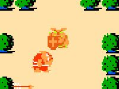
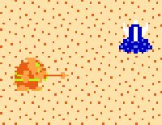
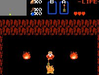
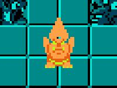

The Molblin's Tale

The Molblin's Tale
|
|
It is widely known that not all of the Molblins living in the forests of Hyrule were pleased with the archmage Ganon's rise to power. Ganon's opressive rule and harsh conscription policies alienated many Molblin clans. It is even rumored that some offered supplies and monetary aid to the elven warrior Link, the hero that eventually slew Ganon. But one young Molblin warrior even went so far as to take matters into his own hands. When his clan allowed Ganon to take many of his brethren as slaves he rebelled against his elders and set out to destroy the evil wizard and free his kindred. This is his story. |  |
| Get the Patch... |  |
| This edit simply replaces Link's character graphics in The Legend of Zelda with those of a Molblin (with a couple tweaks added for animations the Molblin simply didn't have.) Link's sword is also replaced with the Molblin's spear. Aside from that the game remains unchanged. This hack was originally released as a Nesticle .STA file, which unfortunately made it impossible for those with other emulators to use it. Many thanks to Weiss for converting it to an IPS patch! |
| Please consult the Guide to IPS Patches or the document included in the archive for help in using this patch. |  |  |
| Copyright © 1997-1999 Jay McGavren. All Rights Reserved. |